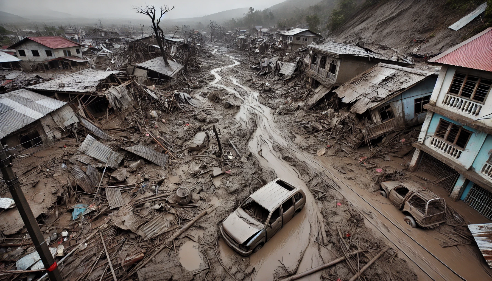
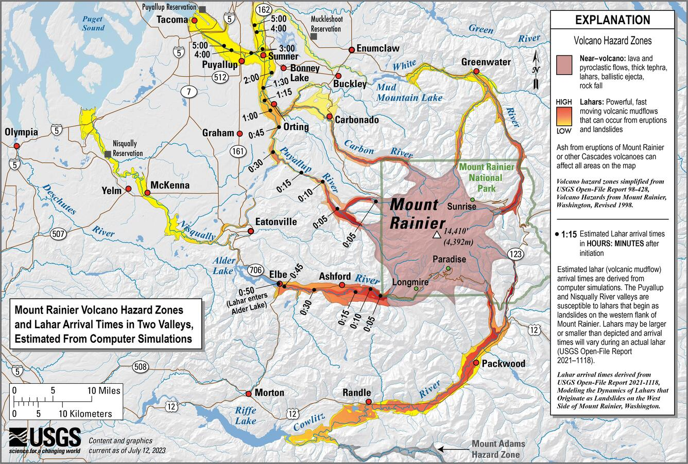

Step 1: Be Aware.
Know Your Hazard.
This page provides an essential summary of lahars and where they might affect
in the Puget Sound Lowlands. Please see the
More About Lahars page for more details, in-depth explanations, and other resources.
REMEMBER: If a lahar happens and you are in a Lahar Zone, you may only have minutes to evacuate.
---- Do so immediately.
What is a lahar?
A lahar is a dangerous flowing mixture of water, volcanic rock, mud,
and other debris (such as trees, vehicles, parts of buildings - whatever
the lahar can pick up). These hazardous flows originate on a volcano,
travelling rapidly down the flanks and into river valleys.
There's no overstating how dangerous lahars are. They are capable of major
destruction of buildings and infrastructure due to forceful impact or burial,
and 20% of the deaths associated with volcanic eruptions worldwide are
due to lahars.
While lahars contain a lot of water, they are not like
normal river floods. They contain a huge amount of mud, and this mud is
left behind when the lahar stops. This mud then dries and sets a bit
like concrete, making clean up and salvage very challenging.
There is no safe amount of exposure to a lahar - you must get out of the way.
The image below is a computer generated example of the impact of a lahar on a town.

Why do lahars happen?
Lahars are caused by a range of things.
Small lahars can happen quite frequently inside Mt Rainier National Park, caused by intense
rainfall or seasonal snowmelt - these typically stay within the
National Park boundaries and are referred to as ‘debris flows’.
Larger lahars, which could reach populated areas,
may be caused by the melting of massive quantities of snow and
ice during an eruption. Alternatively, they may be caused by the
collapse of part of the mountain.
These large lahars are rare and are
most likely to occur during an eruption - this is good because there
is usually some warning before an eruption. However, there is some
evidence to suggest that lahars are possible without an eruption,
known as ‘No-Notice Lahars’. This type of lahar could happen unexpectedly,
so it is important to know how to prepare and respond to a lahar. If you
want to learn more about lahars, go to the More About Lahars page.
Where could lahars go in future?
Evidence suggests 60 major lahars
have come from Mt Rainier in the last 10,000 years -
the Electron Mudflow, was the most recent, and happened about 500 years ago.
These lahars have affected the Puyallup, White, Carbon, and
Nisqually River Valleys, all of which are now home to people.
You can learn more about the history of lahars in the Puget
Sound Lowlands by going to the More About Lahars page.
The Cascades Volcano Observatory (part of the United States
Geological Survey) has set up a Lahar Early Warning System to help
protect people in the event of a lahar. It has also used computer
simulations to figure out the areas that could be affected by a lahar.
This is shown in the map below - see how a lahar could reach a
populated area like Orting in around an hour.
In the Puyallup Valley, in the Orting area, under the worst-case-scenario, there could be 15
feet of mud.
---- This is enough to bury a two-storey building.

Do you live, work, or go to school in the Lahar Zone?
Use the map below to find out. The map shows the areas
that could be affected by a worst-case-scenario lahar.
The map works like any other Google Map - you can zoom in
and out, and move around to look for important places for
you and your family. If you do find yourself in the Lahar
Zone, either often or just occasionally, please look at the
Prepare page
to learn how to protect yourself and your loved ones.